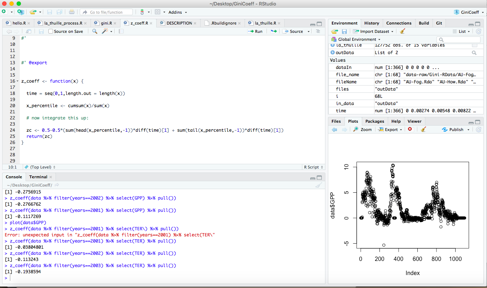
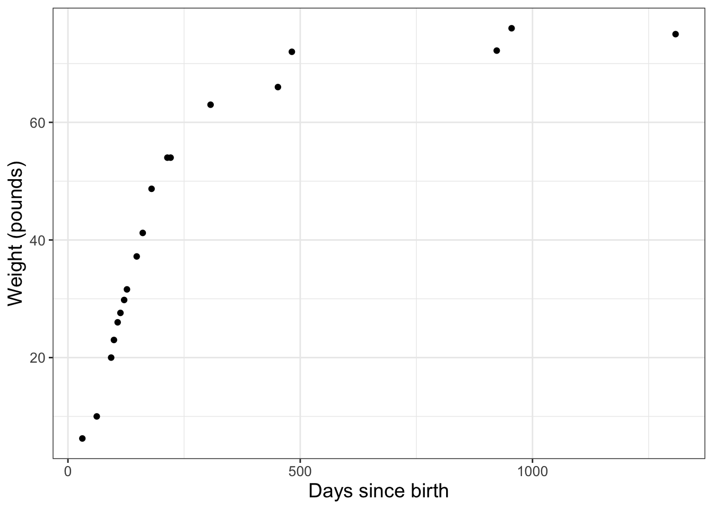
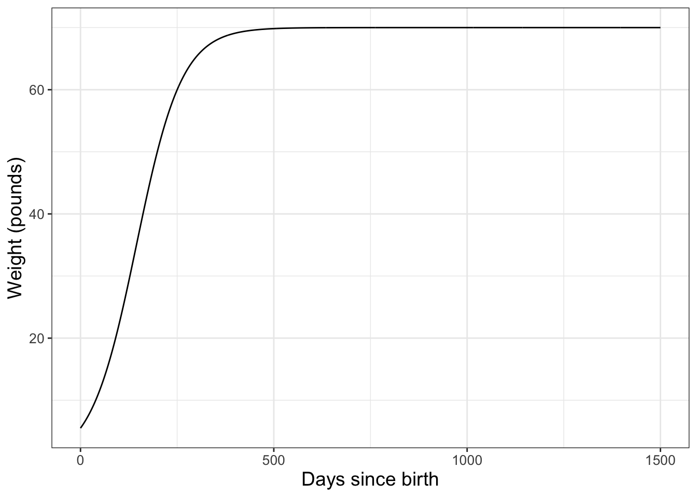
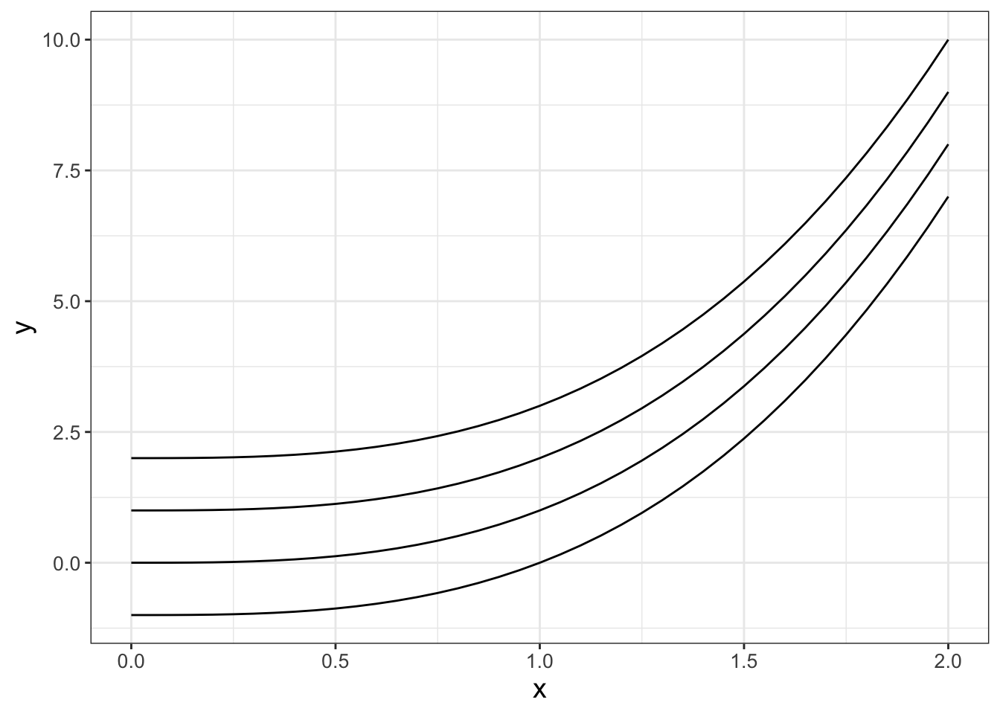

2 Introduction to R
The primary tools we will use to analyze models for this book are R (R Core Team 2020) and RStudio (RStudio Team 2020). These programs are powerful ones to learn! Admittedly learning a new software may be challenging; however I think it is worth it. With R you will have enormous flexibility to efficiently utilize data, design effective visualizations, and process statistical models. Let’s get started!
Note
This chapter uses following libraries: ggplot2, and tibble (all part of the tidyverse) and demodelr. See Section 2.3 on how to install packages. Prior to running any code in this section, include library(tidyverse) and library(demodelr).
2.1 R and RStudio
First let’s talk terminology. The program RStudio is called an Integrated Development Environment for the statistical software language R.
To get both R and RStudio requires two separate downloads and files, which can be found here:
R: https://cran.r-project.org/mirrors.html (You need to select a location to download from; choose any one that is geographically close to you.)RStudio: https://www.rstudio.com/products/rstudio/download/
2.1.1 Why do we have two programs?
Think of R as your basic program - this is the engine that does the computation. RStudio is a program where you can see everything you are working on in one place. Figure 2.1 shows an example of a typical RStudio workspace:
There are 4 key panels that I work with, clockwise from the top:
- The source window is in the upper left - notice how those have different tabs associated with them. You can have multiple source files that you can toggle between. For the moment think of these as commands that you will want to send to R.
- The environment and history pane - these tables allow you to see what variables are stored locally in your environment, or the history of commands.
- The files or plots pane (a simple plot I was working on is shown currently), but you can toggle between the tabs. The files tab shows the files in the current
Rstudioproject directory. - Finally, the console pane is the place where
Rworks and runs commands. You can type in there directly; otherwise we will also just “send” commands from the source down to the console.
Now we are ready to work with R and RStudio!
2.2 First steps: getting acquainted with R
Open up RStudio. The first task is to create a project file. A project is a central place to organize your materials. If you have previous experience with R you may be familiar with how the program is picky about its working directory - or the location on the computer where computations, files, and data are currently saved. Creating a project file is an easy way to avoid some of that fussiness. Here are the steps to accomplish this:
- In
RStudioselect “File” then “New Project”. - Next select the first option “New Directory” in the window - this will create a new folder on your computer.
- At the next window choose “New Directory” or “Existing Directory”. Depending on the option you choose, you will have some choice as to where you want to place this project.
- Name the project as you like.
- Click the “Create Project” button.
It might be helpful to think of a project file as a physical folder where you store papers that have something in common (such as class notes). When you want to work on the project, you open up your folder (and similarly close your project when you are done). At the point of return, you can re-open your folder and pick up where you left off. An RStudio project is similar in that regard as well.
2.2.1 Working with R
Our next step: how does R compute something? For example if we wanted to compute 4+9 we could type this command in the R console (lower left) window.1 Try this out now:
- In the console type
4+9 - Then hit enter (or return)
- Is the result 13?
Success! While this workflow is helpful for a single expression, making use of script files (.R file) can help run multiple steps of code at once. Script files are located in the upper left hand corner of your RStudio window - or the source window. (You may not have anything there when you start working on a project, so let’s create one.)
- In
RStudioselect “File” then “New File” - Next select the first option “New Script”
- A new window called “UntitledX” should appear, where X is a number. You are set to go!2
Source files allow you to type in R code and then evaluate, which is sometimes called “sending a command to the console” - or moving an R statement from the source window to the console. Working with a script file allows you to fix any coding errors more quickly and then re-run your code rather than re-type everything. Let’s practice this. Type 4+9 in the script file. To evaluate this statement you have several options:
- Copying and pasting the command to the window. Shortcuts are Ctrl+C / Command+C for copying and Ctrl+V / Command+C for Windows / Mac.
- Run one line at a time. This means that your cursor is at the line in your source file; then click the “Run” button in the upper right hand side of the source window. Shortcuts are Ctrl+Enter / Command+Enter.
- You can also source the entire script file, which means running all the lines from top to bottom. You do this by clicking the source button, or with shortcuts Ctrl+Shift+Enter / Cmd+Shift+Enter (Windows / Mac). Understandably for several lines of code this makes things easier.
Sometimes source files contain comments, which are helpful notes to you, or future you, or anyone else you want to share your work with. Comments in R are used with the hashtag (#), which appear as green text in RStudio.
2.2.2 Saving your work
The neat part about a source file is that it allows you to save the file (Ctrl+S / Cmd+S). The first time you do this you may need to give this a name. The location where this file will be saved is in the same directory as your .Rproj project file. Now you have a file that you can come back to! In general I try to use descriptive names of files so I can refer back to them later.
2.3 Increasing functionality with packages
Packages are one way that R gets some awesome versatility. Packages are contributed, specialized code produced by users (just like you!), and shared with the world. Packages are similar to apps on your phone, which rather than obtaining them from the app store can be found in two different places:
- CRAN, which stands for Comprehensive R Archive Network. This is the clearing house for many contributed packages - and allows for easy cross-platform functionality.
- Github. This is another place where people can share code and packages (including myself!). The code here has not been vetted through CRAN for compatibility, but if you trust the person sharing the code, it should work.
Let’s now start to download some useful packages. The first package is tidyverse, which is actually a collection of packages. If you take an introductory data science course you will most likely be learning more about this package, but to install this at the command line you type the following:
install.packages("tidyverse")Typing this line will connect to the CRAN download mirrors and install this set of packages locally to your computer. It make take some time, but be patient. Sometimes when you are installing packages you may be prompted to install additional packages. In this case just say yes.
For this textbook I have written a collection of functions and data that we will use. This package name is called demodelr (Differential Equations and Models in R; Zobitz (2022)).3 To install this package you will run the following line:
install.packages("demodelr")Here is the good news: you only need to install a package once before using it! To load the package up into your workspace you use the command library:
# Purpose: compute the growth in weight of a dog over time.
# Author: JMZ
# Last modified: 02-17-2022
library(tidyverse)
library(demodelr)You need to load these libraries each time you restart your R session. This is part of the benefit of a script file - at the start I always declare the libraries that I will need. In addition, the first few lines of the script file contains comments (prefaced with #) to denote the basic purpose of the file, who wrote it, and the date it was last revised. This type of information is good programming practice. If you are a newbie to programming with R, building these habits will become second nature as you progress in your abilities.
2.4 Working with R: variables, data frames, and datasets
2.4.1 Creating variables
The next thing we will want to do is to define variables that are stored locally, which is easy to do:
my_result <- 4 + 9The symbol <- is assignment (you can use equals (=), but it is good coding practice to use the arrow for assignment). Notice how I named the variable called my_result. Generally I prefer using descriptive names for variables for the context at hand. (In other words, the variable x would be an odd choice - too ambiguous.) I also used snake case to string together multiple words. In practice you can use snake case, or alphabetic cases (myResult) or even my.result (although that may not be preferred practice in the long run). However, if you name variables as my-result it looks like subtraction between variables my and result. I try to follow the tidyverse style guide whenever possible.
Once we have defined a variable, we can compute with it. For example 10*my_result should yield 130. Cool, no?
Sequences defined as vectors are another useful construction. In R this is done with the seq function along with additional information such as the starting value, ending value, and step size. As an example, let’s define a sequence, spaced from 0 to 5 with spacing of 0.05 and then store this sequence as variable called my_sequence:
my_sequence <- seq(from = 0, to = 5, by = 0.05)The format for the function seq is seq(from=start,to=end,by=step_size). The seq command is a pretty flexible - there are alternative ways you can generate a sequence by specifying the starting and the end values along with the number of points. If you want to know more about seq you can always use ? followed by the command - that will bring up the help values:
?seqOnce you get more comfortable with syntax in R, you will see that seq(0,5,0.5) gives the same result as seq(from=0,to=5,by=0.05), but it is helpful to write your code so that you can understand what it does.4
2.4.2 Data frames
A key structure in R is that of a data frame, which allows different types of data to be collected together. A data frame is like a spreadsheet where each column is a value and each row a value (much like you would find in a spreadsheet). As an example, a data frame may list values for solutions to a differential equation, like we did with our three infection models in Chapter 1 (Table 2.1).
| time | model_1 | model_2 | model_3 |
|---|---|---|---|
| 0 | 250 | 250 | 250 |
| 1 | 258 | 645 | 257 |
| 2 | 265 | 1027 | 265 |
| 3 | 274 | 1399 | 273 |
| 4 | 282 | 1760 | 281 |
Data frames are an example of tidy data, where each row is an observation, each column a variable (which can be quantitative or categorical). There are several different ways to define a data frame in R. I am going to rely on the approach utilized by the tidyverse, which defines data frames as tibbles.
As an example, the following code defines a data frame that computes the quadratic function \(y=3x^2-2x\) for \(-5 \leq x \leq 2\).
x <- seq(from = -5, to = 2, by = 0.05)
y <- 3 * x^2 - 2 * x
my_data <- tibble(
x = x,
y = y
) # Notice how x and y are specifically definedNotice that the data frame my_data uses the column (variable) names of x and y. You could have also used tibble(x,y), but it is helpful to name the columns in the way that you would like them to be named.
In addition to defining a data frame, R also contains several datasets in memory. In fact to see all the datasets, type data() at the console. Packages may also have datasets bundled with them. If you want to see the datasets for the demodelr package, you would type data(package = "demodelr") at the console.
2.4.3 Reading in datasets
Another R skill is importing data into R. Data come in several different types of formats, but one of the more versatile ones is a csv (comma separated values) file. A csv file is a simplified version of an Excel or Google spreadsheet.5 To read in the file you will use the command read_csv (part of the readr package in the tidyverse). The read_csv command which has the following structure, where FILENAME refers to the location of the file on your computer:
in_data <- read_csv(FILENAME)For example the following code would read in a csv file of Ebola data located in the project directory:
ebola <- read_csv("ebola.csv")Notice the quotes around the FILENAME.6 The command read_csv is part of the tidyverse, but the function read.csv uses base R. They operate a little differently, but this book will use the read_csv command.
2.5 Visualization with R
Now we are ready to begin visualizing data frames. Two types of plots that we will need to make will be a scatter plot and a line plot. We are going to consider both of these separately, with examples that you should be able to customize.
2.5.1 Making a scatterplot
One dataset we have is the weight of a dog over time, adapted from this referenced website. The data frame we will use is called wilson and is part of the demodelr library. You can also explore the documentation for this dataset by typing ?wilson at the console. The wilson dataset has two variables here: \(D=\) the age of the dog in days and \(W=\) the weight of the dog in pounds. I have the data loaded into the demodelr package, which you can investigate by typing the following at the command line:
glimpse(wilson)Notice that this data frame has two variables: days and weight. To make a scatter plot of these data we are going to use the command ggplot in Figure 2.2:
ggplot(data = wilson) +
geom_point(aes(x = days, y = weight)) +
labs(
x = "Days since birth",
y = "Weight (pounds)"
)
Wow! The code to produce Figure 2.2 looks complicated. Let’s break this down step by step:
ggplot(data = wilson) +sets up the graphics structure and identifies the name of the data frame we are including.geom_point(aes(x = days, y = weight))defines the type of plot we are going to be making.geom_point()defines the type of plot geometry (or geom) we are using here - in this case, a point plot.aes(x = days, y = weight)maps the aesthetics of the plot. On the \(x\) axis is thedaysvariable; on the \(y\) axis is theweightvariable. You may also write this asmapping = aes(x = days, y = weight).- The statement beginning with
labs(x=...)defines the labels on the \(x\) and \(y\) axes.
I know this seems like a lot of code to make a visualization, but this structure is actually used for some more advanced data visualization. Think of the + structure at the end of each line as the connector between ggplot and the plot geom. Trust me - learning how to make informative plots can be a useful skill!
2.5.2 Making a line plot
Using the same wilson data, later on we will discover that the function \(\displaystyle W =f(D)= \frac{70}{1+e^{2.46-0.017D}}\). represents these data. In order to make a graph of this function we need to first build a data frame (Figure 2.3):
# Choose spacing that is "smooth enough"
days <- seq(from = 0, to = 1500, by = 1)
weight <- 70 / (1 + exp(2.46 - 0.017 * days))
wilson_model <- tibble(
days = days,
weight = weight
)
ggplot(data = wilson_model) +
geom_line(aes(x = days, y = weight)) +
labs(
x = "Days since birth",
y = "Weight (pounds)"
)
Notice that once we have the data frame set up, the structure is very similar to the scatter plot - but this time we are using geom_line() rather than geom_point.
2.5.3 Changing options
Curious about using a different color in your plot or a thicker line? That is fairly easy to do. For example if we wanted to make either our points or line a different color, we adjust the ggplot to the following code (not evaluated here, but try it out on your own):
ggplot(data = wilson) +
geom_point(aes(x = days, y = weight), color = "red", size = 2)
labs(
x = "Days since birth",
y = "Weight (pounds)"
)Notice how the command color='red' was applied outside of the aes - which means it gets mapped to each of the points in the data frame. size=2 refers to the size (in millimeters) of the points. I’ve linked more options about the colors and sizes you can use here:
- Named colors in R: gallery of
Rcolors. Scroll down to “Picking one color in R” - you can see the list of options! - More colors: colors in
ggplot.. More information about working with colors. - Using hexadecimal colors: hexadecimal colors. (You specify these by the code so
"#FF3300"is a red color.) - Changing sizes of lines and points: modifying a
ggplot.
2.5.4 Combining scatter and line plots.
Combining the data (Figure 2.2) with the model (Figure 2.3) in the same plot can be done by combining the geom_point with the geom_line, as shown in the following code (try it out on your own):
ggplot(data = wilson) +
geom_point(aes(x = days, y = weight), color = "red") +
geom_line(data = wilson_model, aes(x = days, y = weight)) +
labs(
x = "Days since birth",
y = "Weight (pounds)"
)Notice in the above code a subtle difference when I added in the dataset wilson_model with geom_line: you need to name the data bringing in a new data frame to a plot geom. While it may be useful to have a plot legend, for this textbook the context will be apparent without having a legend.
2.6 Defining functions
We will study lots of other built-in functions for this course, but you may also be wondering how you define your own function (let’s say \(y=x^{3}\)). We need the following construct for our code:
function_name <- function(inputs) {
# Code
return(outputs)
}Here function_name serves as what you call the function, inputs are what you need in order to run the function, and outputs are what gets returned. So if we are doing \(y=x^{3}\) then we will call that function cubic:
cubic <- function(x) {
y <- x^3
return(y)
}So now if we want to evaluate \(y(2)=2^{3}\) at the console we type cubic(2). Neat! The following code will make a plot of the function \(y=x^{3}\) using cubic (try this out on your own):
x <- seq(from = 0, to = 2, by = 0.05)
y <- cubic(x)
my_data <- tibble(x = x, y = y)
ggplot(data = my_data) +
geom_line(aes(x = x, y = y)) +
labs(
x = "x",
y = "y"
)2.6.1 Functions with multiple inputs
Sometimes you may want to define a function with different input parameters, so for example the function \(y=x^{3}+c\). To define that, we can modify the function to have input variables:
cubic_revised <- function(x, c) {
y <- x^3 + c
return(y)
}To create and plot several examples of the function cubic for different values of \(c\) is shown in the following code and Figure 2.4.
x <- seq(from = 0, to = 2, by = 0.05)
my_data_revised <- tibble(
x = x,
c_zero = cubic_revised(x, 0),
c_pos1 = cubic_revised(x, 1),
c_pos2 = cubic_revised(x, 2),
c_neg1 = cubic_revised(x, -1)
)
ggplot(data = my_data_revised) +
geom_line(aes(x = x, y = c_zero)) +
geom_line(aes(x = x, y = c_pos1)) +
geom_line(aes(x = x, y = c_pos2)) +
geom_line(aes(x = x, y = c_neg1)) +
labs(
x = "x",
y = "y"
)
Notice how I defined multiple columns of the data frame my_data_revised in the tibble command, and then used mutiple geom_line commands to plot the data. Since we had combined the different values of c in a single data frame we didn’t need to define the data with each instance of geom_line.
2.7 Concluding thoughts
This is not meant to be a self-contained chapter in R but rather one so that you can quickly compute to code. Curious to learn more? Thankfully there are several good resources. Here are few of my favorites that I turn to:
- R Graphics. This is a go-to resource for making graphics. (I also use Google a lot too.)
- The Pirates Guide to R. This book promises to build your R knowledge from the ground up.
- R for Reproducible Scientific Analysis. This set of guided tutorials can help you build your programming skills in R.
- R for Data Science. This is a useful book to take your R knowledge to the next level.
The best piece of advice: DON’T PANIC! Patience and persistence are your friend. Reach out for help, and recognize that like with any new endeavor, practice makes progress.
2.8 Exercises
Exercise 2.1 Create a folder on your computer and a project file where you will store all your R work.
Exercise 2.2 Install the packages devtools, tidyverse to your R installation. Once that is done, then install the package demodelr.
Exercise 2.3 What are the variables listed in the dataset phosphorous in the demodelr library? (Hint: try the command ?phosphorous.)
Exercise 2.4 Make a scatterplot (geom_point()) of the dataset phosphorous in the demodelr library. Be sure to label the axes with descriptive titles.
Exercise 2.5 Change Figure 2.3 so the line is blue and the size is 4 mm.
Exercise 2.6 Change the color of the points in Figure 2.2 to either a hexadecimal color or a named color of your choice.
Exercise 2.7 For this exercise you will do some plotting:
- Define a sequence (call this sequence \(x\)) that ranges between \(-12\) to \(12\) with spacing of \(.05\).
- Also define the variable \(y\) such that \(y=\sin(x)\).
- Make a scatter plot to graph \(y=\sin(x)\). Set the points to be red.
- Make a line plot to graph \(y=\sin(x)\). Label the x-axis with your favorite book title. Label the y-axis with your favorite food to eat.
Exercise 2.8 An equation that relates a consumer’s nutrient content (denoted as \(y\)) to the nutrient content of food (denoted as \(x\)) is given by: \(\displaystyle y = c x^{1/\theta}\), where \(\theta \geq 1\) and \(c>0\) are both constants. Let’s just assume that \(c=1\) and the \(0 \leq x \leq 1\).
- Construct a function called
nutrientthat will make a sequence ofyvalues for an inputxandtheta(\(\theta\)). - Use your
nutrientfunction to create a line plot (geom_line()) for five different values of \(\theta>1\), appropriately labeling all axes.
Exercise 2.9 The dataset phosphorous in the demodelr library contains measurements of the phosphorous content of Daphnia and its primary food source algae.
Researchers believe that Daphnia has strict homeostatic regulation of the phosphorous contained in algae, and want to determine the value of \(\theta\) in the equation \(y= \displaystyle y = c x^{1/\theta}\). They have already determined that the value of \(c=1.737\).
- Complete Exercise @ref(exr:phos-scatter-02). Be sure to label the axes correctly.
- Use your function
nutrientfrom Exercise @ref(exr:nutrient-02) to make an initial guess fortheta(\(\theta\)) that is consistent with the data. You can evaluate your guess by plotting (withgeom_line()) against the data. - Use guess and check to refine the value of \(\theta\) that seems to work best.
- Report your value of \(\theta\).
Exercise 2.10 For this exercise you will investigate some built-in functions. Remember you can learn more about a function by typing ?FUNCTION, where FUNCTION is the name.
- Explain (using your own words) what the function
runif(1,100,1000)does. - Explain (using your own words) what the function
ceiling()does, showing an example of its use.
Exercise 2.11 The Ebola outbreak in Africa in 2014 severely affected the country of Sierra Leone. A model for the number of Ebola infections \(I\) is given by the following equation: \[ I(t) = \frac{K \cdot I_{0} }{I_{0} + (K-I_{0}) \exp(-rt)}, \] where \(K = 13580\), \(I_{0}=251\) and \(r = 0.0227\). The variable \(t\) is in days. Use geom_line() to visualize this curve from \(0 \leq t \leq 700\).
Exercise 2.12 Consider the following piecewise function:
\[\begin{equation} y = \begin{cases} x^2 & \text{ for } 0 \leq x < 1,\\ 2-x &\text{ for } 1 \leq x \leq 2 \\ \end{cases} \end{equation}\]
- Define a function in
Rthat computes \(y\) for \(0 \leq x \leq 2\). - Use
geom_line()to generate a graph of \(y(x)\) over the interval \(0 \leq x \leq 2\).
Exercise 2.13 An insect’s development rate \(r\) depends on temperature \(T\) (degrees Celsius) according to the following equation:
\[\begin{equation} r = \begin{cases} 0.1 & \text{ for } 17 \leq T < 27,\\ 0 &\text{ otherwise.} \end{cases} \end{equation}\]
- Define a function in
Rthat computes \(r\) for \(0 \leq T \leq 30\). - Use
geom_line()to generate a graph of \(r(T)\) over the interval \(0 \leq T \leq 30\).
Exercise 2.14 An important parameter in modeling the spread of diseases is the \(R_{0}\), which represents if a disease will become an epidemic. If \(R_{0}>1\), then the disease will become an epidemic. If \(R_{0}<1\), then it will not. For a disease like Herpes, one model is a susceptible - infected (\(SI\)) model, assuming there is no recovery from Herpes. For this case, an expression for \(R_{0}\) is the the following:
\[ R_{0} = \frac{\beta}{\mu + \delta}, \]
where \(\beta\) represents the rate of transmission, \(\mu\) the baseline mortality rate, and \(\delta\) the mortality rate induced by the disease.
- Using
Randggplot2, let \(\mu = \frac{1}{1000}\) and \(\delta = \frac{1.193}{1000}\). Plot \(R_{0}\) as a function \(\beta\) and include your plot in the response. Make sure \(0 \leq R_{0} \leq 2\). (You will need to find an appropriate window for \(\beta\).). What is the threshold value for \(\beta\) for an epidemic? Be sure to label your axes appropriately. - Using
Randggplot2, let \(\mu = \frac{1}{1000}\) and \(\beta = \frac{2}{100}\). Plot \(R_{0}\) as a function \(\delta\) and include your plot in the response. Make sure \(0 \leq R_{0} \leq 2\). (You will need to find an appropriate window for \(\delta\).). What is the threshold value for \(\delta\) for an epidemic? Be sure to label your axes appropriately.
R Core Team. 2020. R: A Language and Environment for Statistical Computing. Manual. Vienna, Austria: R Foundation for Statistical Computing.
RStudio Team. 2020. RStudio: Integrated Development Environment for R. Manual. Boston, MA: RStudio, PBC. http://www.rstudio.com/.
Wilson, Greg, D. A. Aruliah, C. Titus Brown, Neil P. Chue Hong, Matt Davis, Richard T. Guy, Steven H. D. Haddock, et al. 2014. “Best Practices for Scientific Computing.” PLoS Biol 12 (1): e1001745. https://doi.org/10.1371/journal.pbio.1001745.
Zobitz, John. 2022. “Demodelr: Simulating Differential Equations with Data.”
I know you know the result is 13, but this is an illustrative example.↩︎
Pro tip: There are shortcuts to creating a new file: Ctrl+Shift+N (Windows and Linux) or Command+Shift+N (Mac).↩︎
You can also find
demodelron github as well: https://github.com/jmzobitz/demodelr.↩︎I believe that code should be built for humans, not computers; see Wilson et al. (2014) for more information.↩︎
While the following steps focus on csv files,
Rcan read in Excel files with thereadxlpackage (https://readxl.tidyverse.org/) or Google sheets with thegooglesheets4package (https://googlesheets4.tidyverse.org/).↩︎Pro tip: It is helpful to make a subfolder of your
Rproject called data, where all csv files are stored. Then if you have the data files in the data folder, in RStudio you can type “data” and it may start to autocomplete - this is handy.↩︎